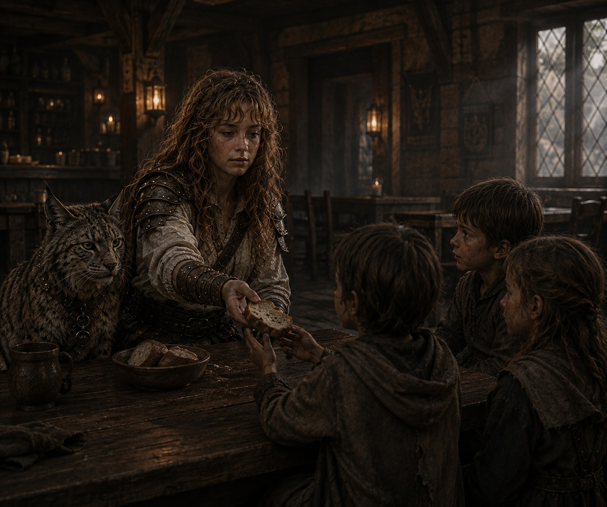
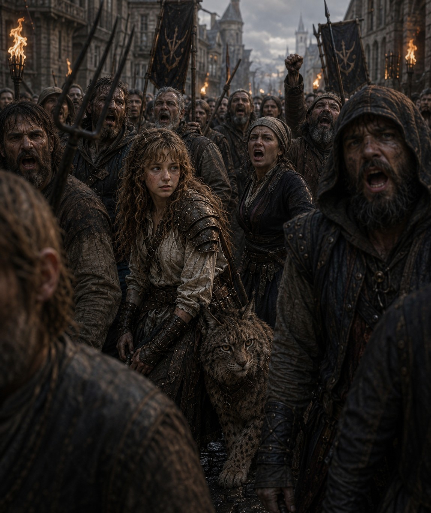
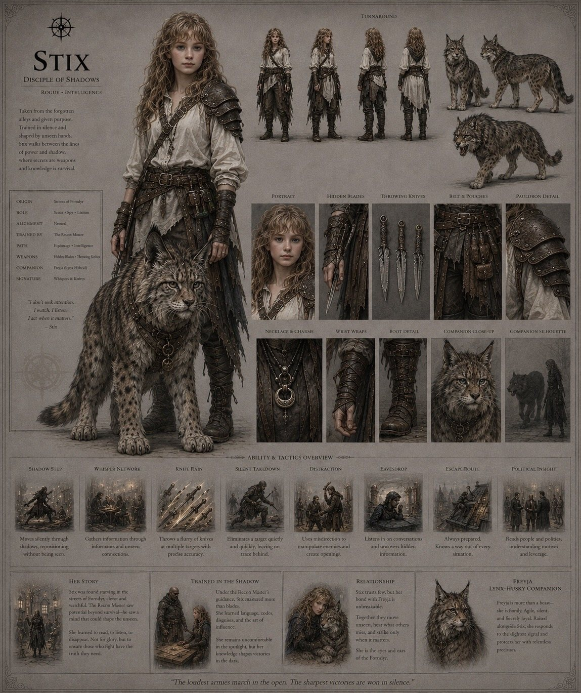

The First Age
Recon Informant · Stealth · Recon · Shadows

The tavern · Tap to open
Why she is here
She still remembers.
Of the scenes I have of her, that is the one, and it took me a while to work out why. She has hidden blades in both wrists, throwing knives on her belt, and a lynx the size of a wolfhound standing at her shoulder. A the while, feeding kids who have clearly not eaten today.
Stix was found starving in the streets, and the Recon Master did not pick her up out of kindness. She saw a mind that could shape the unseen and she trained it. So Stix learned to read, to listen, and to disappear, and she came out the other side as the person who knows what is actually happening in a city rather than what the city says is happening.
Which is what makes the bread interesting. Nobody feeds three hungry children in a tavern without learning something, and nobody who was once one of those children forgets it either. I am not going to tell you which of those is her motive. I do not think she could tell you cleanly herself.
Here is why she is in the game.
She is the argument that knowledge is a real resource. I have written a fair bit about wanting a world where information belongs to whoever found it, and where discovery is worth more than a bigger number. Stix is that written as a person. Her power is not force. It is that she knows things, and she gets to decide who else does.
A world with only one correct way to be effective in it is not a world I want to build. She is the counterweight to Stahlwall. He is what happens when you are visibly, loudly right and get reprimanded for it. She is what happens when you never let anyone see you at all. Same institution, same Capital city, two entirely different survival strategies, and both of them work.
The second image is the one that unsettles me. A mob in the street, torches up, everybody shouting. And she is not shouting. She is the only person in that crowd who is looking at something, and her hand is already on Freyja. Standing in a riot and reading it instead of joining it tells you more about her than any ability description could.
And Freyja is not a pet. She was raised alongside Stix rather than acquired by her, and the two of them move as one thing. That relationship is the entire design of companions in this game stated in a sentence, and I am not going to spoil the rest of it here.
She is uncomfortable being looked at, which is a slightly awkward quality in a character I am publishing on a website with her face on it.
She would tell you that is fine. She would also already know why you clicked.
Exo · GEASA Interactive

Somewhere among the people · Tap to open
Her story
Disciple of shadows. Rogue, Intelligence. Hidden blades and throwing knives, with Freyja, a husky and lynx fusion with her always.
She learned very young that being unnoticed is not the same as being invisible. Invisible people are forgotten. The unnoticed are simply overlooked, and she survived by understanding the difference. That was about when she lost her sister.
They were Forndyr and they were refugees
She came to the Capital with almost nothing and her sister, they were homeless and alone before they were old enough to understand what had happened to her family. Small, quiet, easily underestimated, and none of that stopped Stix wanting to become someone of merit. That ambition was the first fixed thing in her life and nothing since has moved it. She doesn’t remember how she lost her sister, she just remembers becoming separated, the sensation of cold stone under foot and the pain in her stomach.
So she worked. She scrounged for every penny she could find, and then she gave most of it away to people worse off than she was, which is not a sensible way to survive and was never going to be.
She learned to use her knives to steal, because at that age there was no other way, and she stopped for a reason. The coins were not abstractions. She took from someone as poor as she was and watched the woman find it missing, and understood in that moment what her theft actually placed on people who were trying to make ends meet exactly as she was.
She stopped taking from anyone who could not afford the loss, and her life became considerably harder.
So she took contracts instead.
Small-scale mercenary work outside the walls, at an age when nobody should be doing it. The jobs nobody else would take, into places nobody else would go. Being of Forndyr blood and having nothing left to lose made her fearless, and fearless got her out of the most dangerous moments by the narrowest possible margins, several times.
And then one day she realised she had missed something.
She had not noticed that she was being watched. Somebody had been keeping tabs on her for months.
The Recon Master had heard the rumours moving among the common folk. A strange girl. A commoner who knew too much. A young mercenary appearing where she had no business being. The stories did not agree with each other, which was what made them interesting, and the Master tracked her the way she tracked anything: slowly, and from a distance, and without ever once being seen.
What finally decided it had nothing to do with espionage. Stix finished a job, was paid almost nothing for it, counted her few coins in an alley, and left most of them beside a sleeping street urchin before walking away.
The Recon Master offered her a job. To become a Raven.
The Ravens were the messengers, the eyes and the ears of the intelligence network within and beyond the Capital. For Stix it was the first time anybody had looked at everything she had become and seen potential rather than damage.
She gained the respect and the ear of commoner and outlaw alike, quickly, because she had been both. She had spent her childhood collecting fragments without knowing that was what she was doing, and somebody finally showed her how fragments assemble. In time she became second to the Master. The Recon apprentice.
The Master taught her everything she could while she still had the chance.
Then the Fracture takes the structure out from under all of it.
The Ravens dispersed. What good is a network with no focus and no one to inform. Messages stopped arriving. Agents disappeared. Couriers did not come back.
Stix was too young to know what to do and too innocent to lead. She had been trained to observe, infiltrate and influence people who held authority. Nobody had trained her to become the authority. And the world no longer had the patience to wait for her to grow into it, so she was forced to become the woman civilisation needed before her time.
She rebuilt the Ravens from the very few who remained.
Found them hiding, or frightened, or finished with the work, and started again. The old network had served a Capital. The new one had to serve a broken world, so the Ravens became scouts, investigators, protectors and keepers of memory as well as messengers. They watch roads where no guards remain. They track people who have been displaced. They identify a threat before it reaches a settlement, and carry warnings between communities that once relied on institutions that no longer exist.
Intelligence after the Fracture is not knowing what is happening. It is making sure somebody knows.
And she is looking for her master.
Quietly, methodically, without the desperation of a girl searching for a lost friend and with all the discipline of the woman she was trained to become. She follows rumours. She reconstructs movements. She listens to survivors, finds the contradictions in old reports, and follows the evidence everybody else dismissed. What became of the Masters is a question the world has stopped asking. She has not.
I do not seek attention. I watch. I listen. I act when it matters.Because Stix does not seek attention. She watches. She listens. She acts when it matters.
The sheet

Tap to open, then tap again to zoom to full size